Feedback
Feedback is the action of a circuit's output on its own input: the circuit receives information about what it is doing.

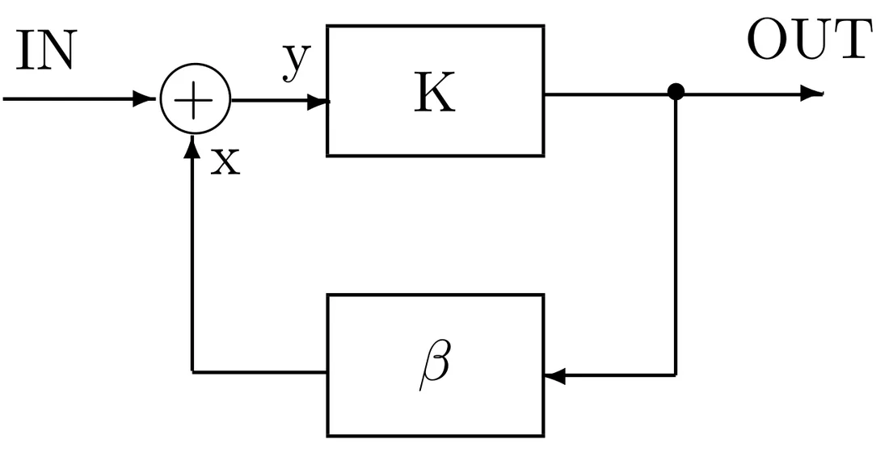
| Kind | What it does | Used for |
|---|---|---|
| Negative | the returned signal weakens the output | stabilisation — this is what amplifiers use (H. S. Black, 1927) |
| Positive | the returned signal strengthens the output | destructive on its own — the circuit "runs away" to an extreme value |
| Bipolar | a combination of both | — |
For the system in the figure (block K in the forward path, block β in the feedback path) the closed-loop transfer function is:
In plain words
Cruise control in a car. Too slow → more throttle; too fast → less. The system keeps watching its own result and corrects in the opposite direction. That is negative feedback. Positive feedback is a microphone held to a loudspeaker: the squeal grows by itself.
What it is good for: the gain depends only on the resistors
With negative feedback the returned signal is subtracted, so the denominator is 1 + K·|β|. If K is huge (and in an op-amp it is — hundreds of thousands), the 1 no longer matters and we get T ≈ 1|β|. So the gain of the whole circuit depends only on the feedback components (two resistors), not on the amplifier itself. That is why the formulas below contain only R1 and R2.
The operational amplifier

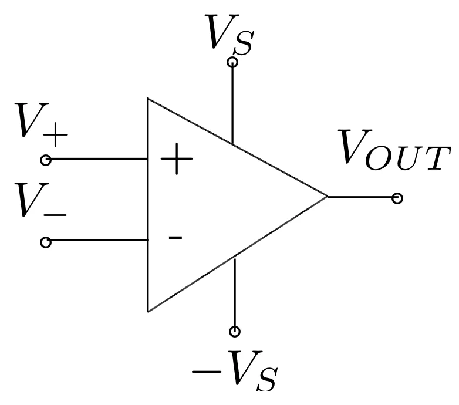
An operational amplifier (op-amp) is a multi-stage differential DC amplifier with a very large gain. It has:
- a non-inverting input "+" (V+),
- an inverting input "−" (V−),
- one output,
- two supplies: positive +VS and negative −VS.
It amplifies only the difference between the input voltages:
On its own such a gain is uselessly large — only the feedback loop gives the circuit the desired properties.
Where the name comes from
The amplifier was designed to model mathematical operations (addition, subtraction, integration, differentiation) in analog computers. The first integrated one: µA709 (1965), soon replaced by the 741, still produced today.
Ideal versus real
| Parameter | Ideal | Real (µA741) |
|---|---|---|
| Open-loop gain | infinite | 10⁵–10⁷ (741: 2·10⁵) |
| Input impedance | infinite | a few MΩ (741: 2 MΩ) |
| Output impedance | zero | about 100 Ω (741: 75 Ω) |
| Input current | zero | about 10 nA (bipolar), pA (CMOS) |
| Offset voltage | zero | about 1 mV |
| Bandwidth | infinite | limited |
| Slew rate | infinite | of the order of V/µs |
| Noise | none | present |
Other imperfections: common-mode rejection is not perfect (the CMRR ratio), parameters drift with temperature, input capacitance limits the bandwidth.
As long as the ideal description is good enough, the op-amp can be treated as a black box with a very large gain. FET/MOSFET op-amps are closer to the ideal than the older bipolar ones.
The offset voltage is a small output voltage that appears even when both inputs are shorted to ground — a result of the input stage not being perfectly symmetrical. You measure it in lab 6.
Internal structure

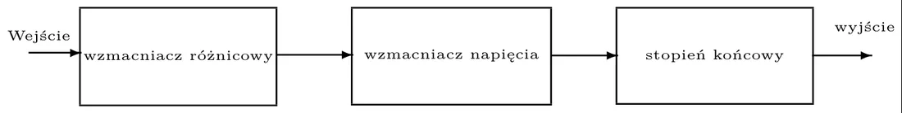
- Differential amplifier — amplifies the difference, gives low noise and high input impedance.
- Voltage amplifier — provides the large gain (and unfortunately limits the bandwidth).
- Output stage — provides low output impedance, limits the current, protects against a short circuit.
Two non-linearities
- Saturation — the output voltage cannot go beyond the supply voltages. If the calculation says 30 V and the supply is ±12 V, the output will be about 12 V with a "clipped" signal.
- Slew rate — the output cannot change arbitrarily fast (of the order of volts per microsecond).
Bandwidth for gain

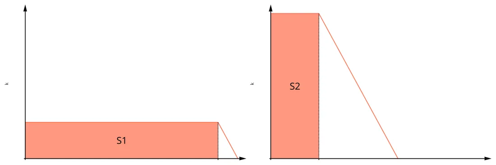
The product of bandwidth and gain is constant: f3dB · kmax = const. Want more gain — you get a narrower band, and vice versa.
Basic circuits
Two "golden rules" for analysis (with negative feedback)
- No current flows into the op-amp inputs (input impedance ≈ ∞).
- The op-amp drives its output so that the voltages at both inputs are equal (V+ = V−).
From these two rules and Ohm's law you can derive every formula in this section. They do not apply to the comparator — it has no feedback.
Inverting amplifier

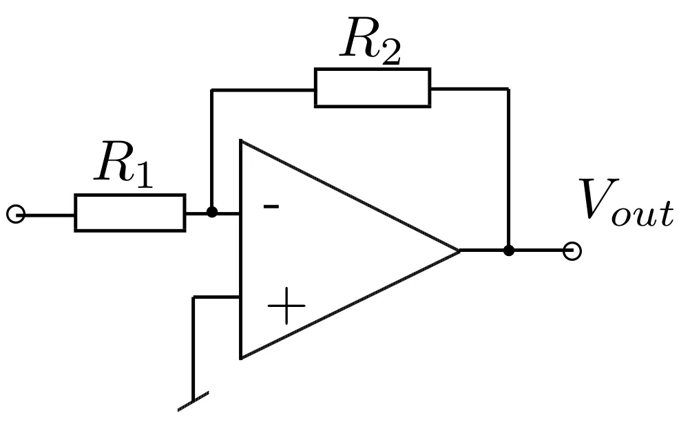
It amplifies and inverts the signal (the minus = a 180° phase shift: when the input goes up, the output goes down).
Non-inverting amplifier

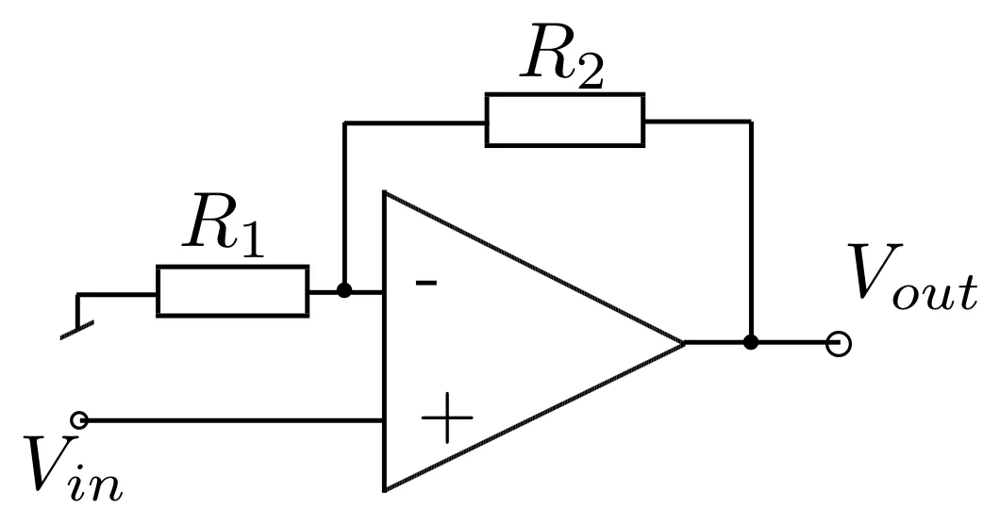
It amplifies without inverting; the gain is always greater than 1. The input impedance is huge (1 MΩ to 10 TΩ).
✚ My own example: R₁ = 2.2 kΩ, R₂ = 10 kΩ
- inverting: k = −102.2 = −4.55 → a 0.4 Vpp sine becomes 1.82 Vpp, inverted;
- non-inverting: k = 1 + 102.2 = 5.55 → 0.4 Vpp becomes 2.22 Vpp, in phase.
The same two resistors give a gain exactly 1 larger in the non-inverting circuit.
Voltage follower

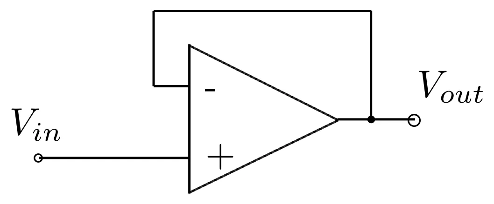
A gain of 1 — what for? Because it has a very large input impedance and a very small output impedance (about 100 Ω). Placed between two circuits, it makes sure the second one does not load the first (e.g. a meter does not "spoil" what it measures).
From the site author (not in the lecture)
On the slide this circuit is labelled "emitter (impedance) follower". In the lab report it is called a voltage follower — that is the name I use.
Comparator

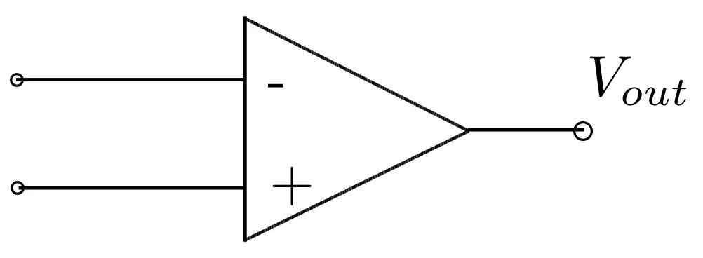
Without feedback the amplifier saturates immediately and works as a comparer of two voltages. The output is either the positive or the negative supply voltage:
(V1 — the "−" input, V2 — the "+" input.) In short: higher voltage on "+" → output positive.
Differential amplifier

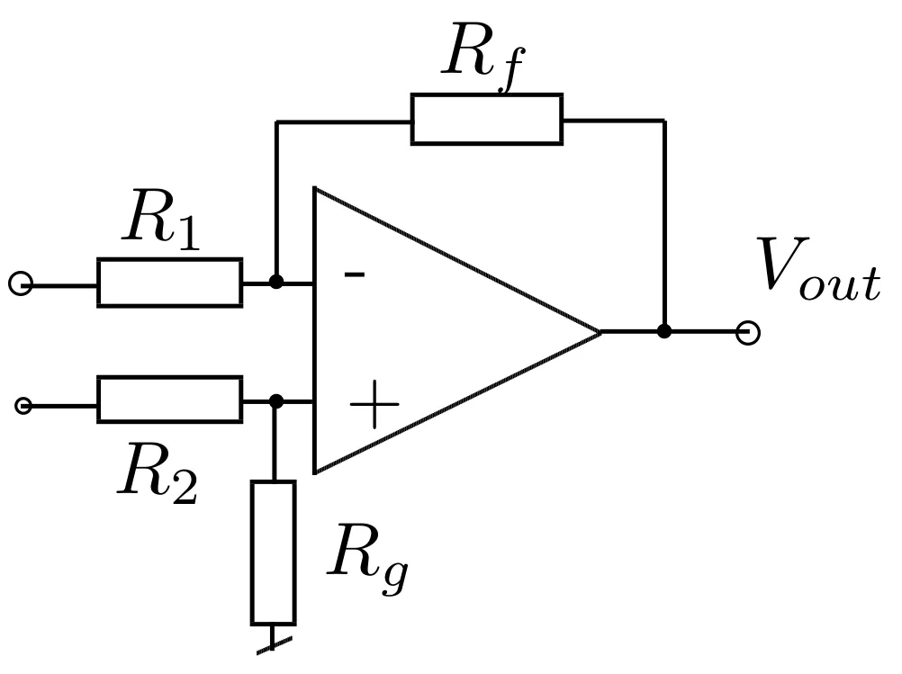
It amplifies the difference V2 − V1. When R1 = R2 and Rf = Rg:
Summing amplifier

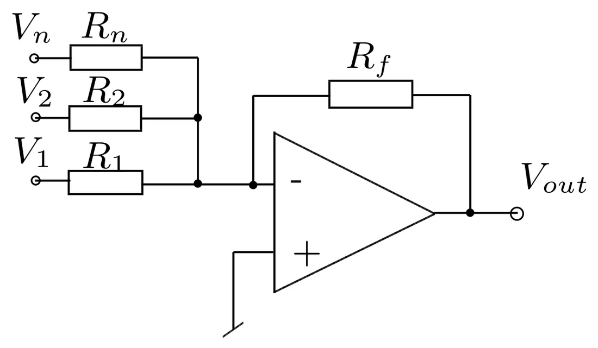
A weighted sum: the smaller the input resistor, the larger the "weight" of that voltage. With equal resistors: Vout = −RfR1(V1 + V2 + … + Vn). The digital-to-analog converter in lecture 13 is based on the summing amplifier.
Integrator and differentiator

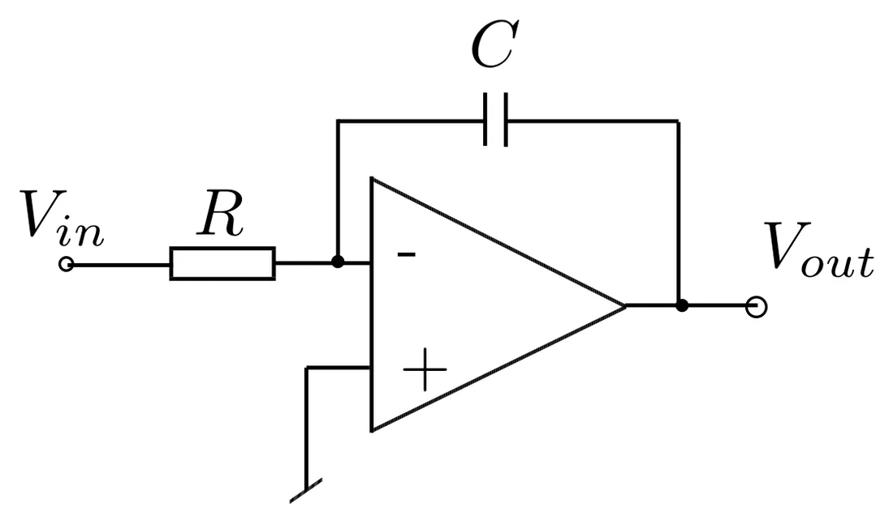

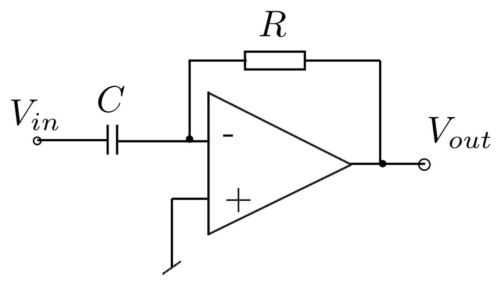
Active filters
An active filter contains at least one active component (e.g. an op-amp). It can filter and amplify at the same time.

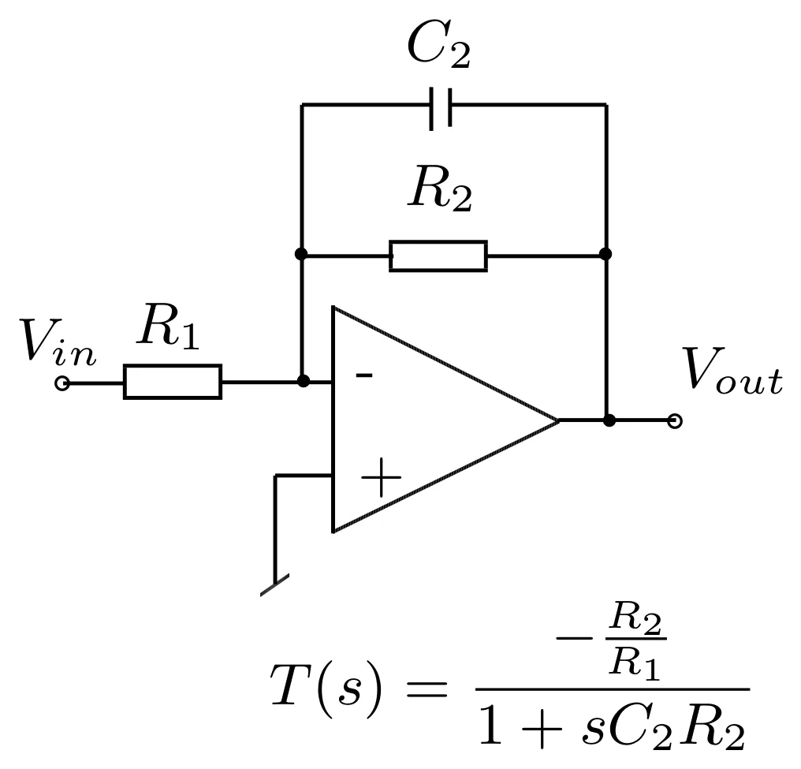

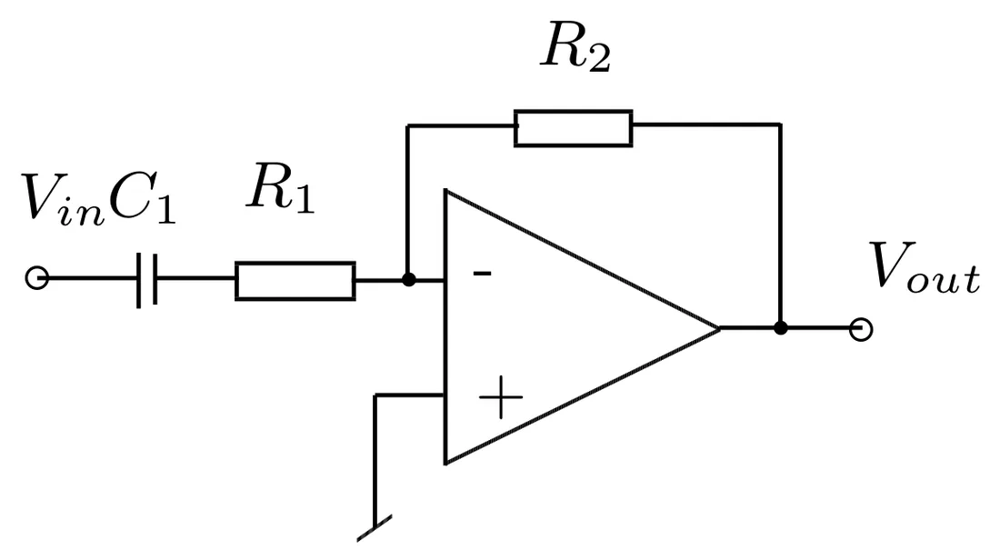
The minus sign means a 180° phase inversion.
The lab module

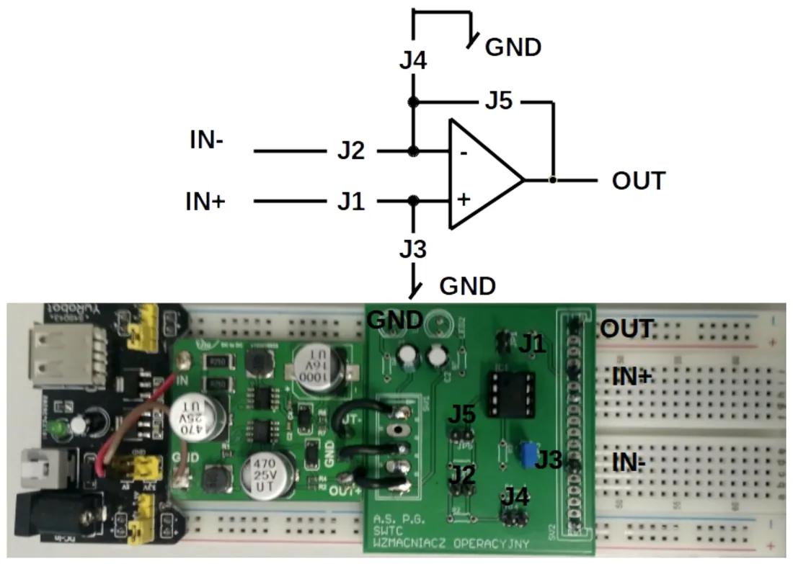
In the lab you use a ready-made board with an op-amp. Jumpers J1–J5 (closed, open or with a resistor plugged in) decide which of the circuits above you get. Details: Lab 6.